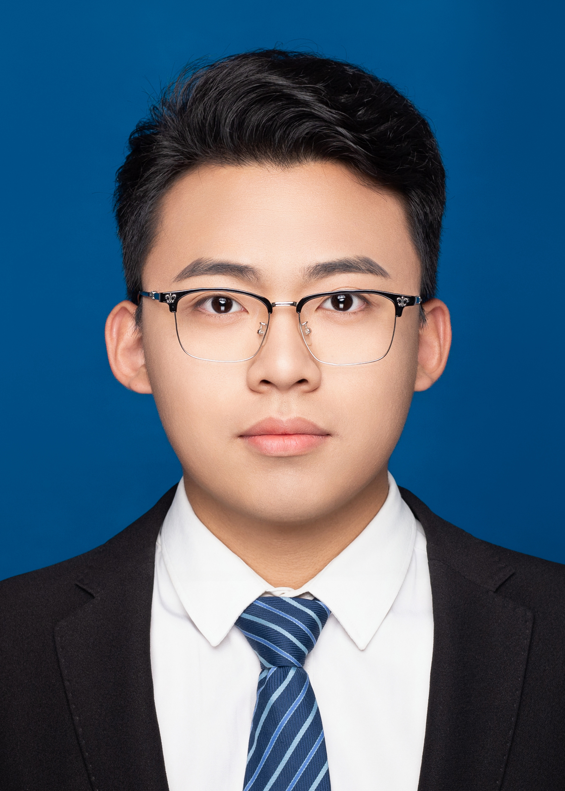

Faculty

Zhang Yunjun (张云俊)

Professor of Electrical Engineering
PhD, University of Miami, 2019
MSc, University of Chinese Academy of Sciences, 2014
BEng, Wuhan University, 2011
Email: yunjunz@aircas.ac.cn
CV |
Google Scholar |
GitHub
Graduate Students

Yingqi Bai (白英琪)
PhD student
BSc, Dalian University of Technology, 2025
Email: baiyingqi25@mails.ucas.ac.cn
Research areas: time series analysis, landslides

Yuxuan Li (李宇轩)
PhD student
BEng, China University of Mining and Technology, 2025
Email: liyuxuan25@mails.ucas.ac.cn
Research areas:

Yunna Zhan (詹云娜)
Incoming master student
BEng, Tongji University, 2026 (expected)
Email: 2153532@tongji.edu.cn
Research areas:
Alumni

Qingyue Yang (杨晴月)
Tropospheric delay and orbital error correction
PhD, University of Chinese Academy of Sciences, 2024
BEng, Xidian University, 2019
Now at China Unicom Research Institute